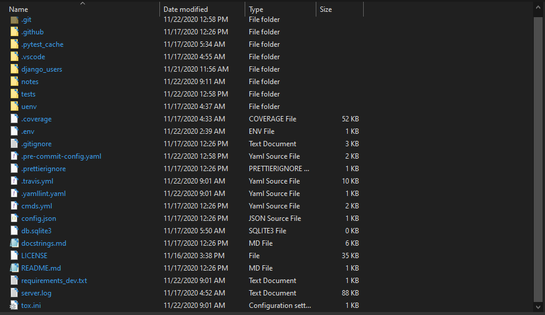

Hello! I am Debabrata Bhattacharya. Welcome to my projects page for Project-Setup.
Here is a link to my portfolio page. And here's a link back to my projects page.
But first, a little about me!
I am a Software Engineer with experience developing Java, Python, Android, and JavaScript applications. I can develop, integrate, and deploy AWS services. I can also train and deploy Machine Learning models in Python.
Python application that sets up a custom development environment in seconds.
Technologies used: Python, YAML, Pytest
View the source code on GitHub here.
The python program deploys a pre-made package with template files for easy setup. The commands file, commands.yml is then used to execute a series of commands that automate the setup. Logging is enabled, with logs for both input and output. Test coverage is 98%, passing.
Here is an example commands.yml file for this project:
---
commands: |
echo Hello
git status
git pull origin master
git checkout -b setup
git status
python -m venv environment-name
echo created environment-name
echo. >> .gitignore
echo # Environments >> .gitignore
echo environment-name/ >> .gitignore
echo # Local workspace configs >> .gitignore
echo .vscode/ >> .gitignore
echo. >> .gitignore
echo # Secrets files >> .gitignore
echo secrets.txt >> .gitignore
git pull
git status
git add .gitignore
git status
git commit -m "Add_environment_name_to_.gitignore"
git status
git push origin setup
git status
environment-name\\Scripts\\python.exe -m pip --version
environment-name\\Scripts\\python.exe -m pip install -r requirements_dev.txt
ren project_name\\project_name.py new_name.py
ren project_name new_name
ren tests\\test_project_name.py test_new_name.py
ren .env1 .env
black .
git status
git add *
git status
pre-commit install
pre-commit run --all-files
git status
git add *
git status
git commit -m "Create_files_and_run_pre-commit"
git status
git add *
git status
git commit -m "Create_files_and_run_pre-commit"
git status
git push origin setup
git status
substitutions:
- sub: django_users
loc:
- repo-name
- sub: uenv
loc:
- environment-name
- sub: django_users
loc:
- new_nameThis tool is meant to be used to quickly setup a custom development environment. Currently it sets up a single environment only, with 3 others under development.
It can be easily customised and can serve as a framework for building custom setup scripts.
Here is a screenshot of the project directory after setup:

Here is some sample code to help you gauge code style:
"""
This file contain a class Commands.
This class is used to execute commands passed to it.
Calling it's operate method will
- Extract yaml data from a yaml file
- Substitute attributes into each command string
- Run each command string
- Log output
"""
import logging
import logging.config
import os
import shutil
import subprocess
from json import load as jload
from os import system
from subprocess import run
import yaml
from yaml import Dumper, Loader
# Configure logger lg with config for appLogger from config.json["logging"]
with open("config.json", "r") as f:
config = jload(f)
logging.config.dictConfig(config["logging"])
lg = logging.getLogger("appLogger")
# lg.debug("This is a debug message")
def helloworld(object):
"""
Print a line
args:
object (str): name of the object
returns:
None
"""
if type(object) != str:
raise TypeError
print("I am a {}.".format(object))
class Commands(object):
"""
Executes a list of commands.
"""
def __init__(self):
self.commands = []
def add_commands(self, command_list, losc=False):
"""
Add a list of commands to self.commands.
Args:
command_list:
(str): A string of commands seperated by spaces
(list): A list of string commands
losc (bool): Whether we are passing a list of string commands that
need to be split individually
Returns:
None
"""
if not command_list:
raise AttributeError(
"Empty list or string passed to add_commands method"
)
if type(command_list) == str:
command = command_list.split(" ")
self.commands.append(command)
elif losc == True:
for base_string in command_list:
command = base_string.split(" ")
self.commands.append(command)
else:
self.commands.append(command_list)
def delete_commands(self):
"""
Deletes all the commands
Args:
None
Returns:
None
"""
self.commands.clear()
def execute_cmd(self, command):
"""
Executes a single command and returns output.
Args:
command (list): A list of string commands
Returns:
stdout (string): Output from running the command
"""
if not command:
raise AttributeError("Empty command list")
if type(command) != list:
raise TypeError("Command should be a list")
# run the command
result = run(command, stdout=subprocess.PIPE, shell=True)
# decode output from bytes to UTF-8 encoded string
stdout = result.stdout.decode("utf-8")
# return output
return stdout
def file_extract(self, file_name):
"""
Extracts yaml strings from a file
Args:
file_name (string): Name of the file
Returns:
command_list (dict): yaml extracted from file
"""
# Check if file name has been passed
if not file_name:
raise ValueError("Empty filename")
# Check if file exists
if not os.path.exists(f"./{file_name}"):
raise FileNotFoundError(f"{file_name} doesn't exist")
# check if file is a zip file
if file_name[-4:] != ".yml":
if file_name[-5:] != ".yaml":
raise ValueError(
f"{file_name}: File extension should be yml or yaml"
)
with open(file_name, "r") as stream:
yaml_object = yaml.load(stream, Loader=Loader)
return yaml_object
def log_output(self, command, output):
"""
Writes output to log
Args:
command (string): String of command to be logged.
output (string): String of output to be logged.
Returns:
None
"""
if not command:
raise ValueError("Empty command or output")
if not output: # pragma: no cover
output = "Empty output"
lg.info("Command:")
lg.info(command)
lg.info("Output:")
lg.info(output)
def run_commands(self):
"""
Runs all the commands in the commands attribute of the object, and
deletes them. Writes output to setup.log.
Args:
None
Returns:
None
"""
if not self.commands:
raise ValueError("Empty Command List")
# run all the commands
for command in self.commands:
output = self.execute_cmd(command)
self.log_output(command, output)
# Clear the list of commands
self.delete_commands()
def substitute_values(self, command_data):
"""
Substitutes attributes in commands at locations.
Args:
command_data (yaml): A yaml object that contains:
commands (string): string commands sub and loc
substitutions (dict): dictionary that contains
sub (list): list of string attributes
loc (list): list of string locations
Returns:
cmd_list (list): A list of string commands
"""
if not command_data:
raise (
TypeError(
"Pass only yaml objects to substitute.Or Empty yaml object passed."
)
)
elif type(command_data) != dict:
raise (TypeError("Pass only yaml objects to substitute"))
if not command_data["commands"]:
raise (ValueError("Empty command list"))
substitutions = command_data["substitutions"]
cmd_list = []
commands = command_data["commands"]
content = commands
for substitution in substitutions:
sub_word = substitution["sub"]
loc_len = len(substitution["loc"])
for i in range(loc_len):
content = content.replace(substitution["loc"][i], sub_word)
cmd_list = content.split("\n")[:-1]
return cmd_list
def operate(self, file_name): # pragma: no cover
"""
Operates the setup
Args:
file_name (string): Name of the file
Returns:
bool :
True if it works
False if it doesn't
"""
try:
self.delete_commands()
command_data = self.file_extract(file_name)
commands = self.substitute_values(command_data=command_data)
self.add_commands(commands, losc=True)
self.run_commands()
return True
except Exception as e:
lg.error(e)
return False
cmds = Commands()
cmds.operate("cmds.yml")